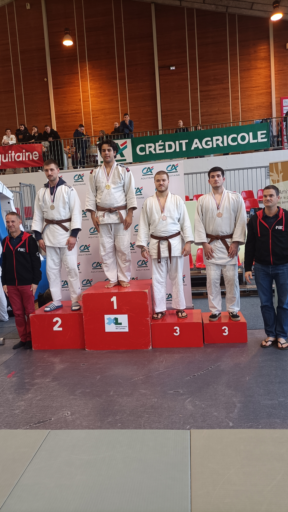

Judo
Accueil
Projets
Compétences
Contact
Activité physique
Pratique du judo depuis l'âge de 7 ans
Niveau atteint : Ceinture noire

Compétences acquises
Maîtrise des techniques de projection, d'immobilisation et de étranglement
acquisition des valeurs du judo.
Développement de la coordination et de la souplesse
Connaissance des règles et de l'étiquette du judo
Valeurs apprises
Respect de soi-même et des autres
Discipline et persévérance dans l'effort
Contrôle de soi et gestion du stress
Esprit d'entraide et de solidarité
Expérience
Participation régulière à des entraînements et des compétitions pendant plusieurs années
Apprentissage de l'importance de la stratégie et de la tactique dans les combats
Développement de la confiance en soi et de l'estime de soi grâce à la progression constante dans la pratique du judo
Points forts
Persévérance et détermination dans la poursuite d'un objectif à long terme (la ceinture noire)
Capacité à travailler dur et à relever des défis physiques et mentaux
Respect des valeurs fondamentales du judo et capacité à les appliquer dans la vie quotidienne
Points à améliorer
Continuer à travailler sur la souplesse et la mobilité pour maintenir une bonne condition physique générale.